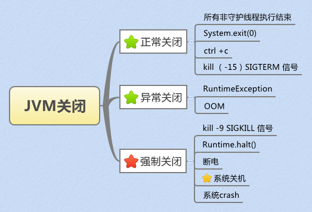
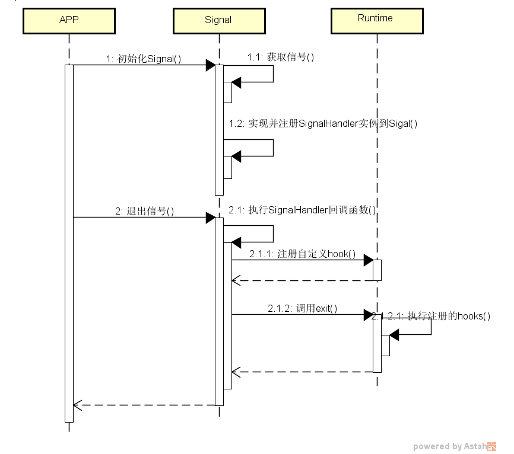

背景
核心业务在发版的时候，出现线程池的异步订单丢失。 因为线程池在初始化的时候已经加了hook，在hook里面执行了shutdown，竟然每次发版还是会丢失订单。这个乍看起来比较奇怪，就花了点时间理了理关于jvm安全关闭的知识。
关于进程的关闭涉及的知识点比较多。springboot的安全关闭，jvm的安全关闭等等。
JVM退出的场景
- 收到 signal
- 在 Java 代码里调用了 System.exit(int)。
- 主线程跑完入口方法main()的时候，系统中还存在其它non-daemon线程，那么JVM要一直等到这些non-daemon线程也跑完才结束。而如果剩下的都是daemon线程了，则JVM不会等待它们跑完而直接可以退出
当收到 Exception 或 Error 类型的 signal，默认情况下 JVM 会直接退出，shutdownhook 都不会被调用的。 比如我们常用的
kill -9，shutdownhook的代码就不会被执行。
下图展示了JVM关闭的场景：  只有在正常关闭的场景，才会执行shutdownhook
JVM的安全退出
JVM的安全退出可以基于Signal和ShutdownHook安全退出。 基于Signal安全退出的相对比较少，但是对一些特殊场景比较有用，例如需要在进程关闭的时候立即得到事件消息，以便在第一时间做处理，而又很难侵入原有的关闭机制。 下图展示了两种安全退出的关系： 
基于Signal的安全关闭
信号简介
信号是在软件层次上对中断机制的一种模拟，在原理上，一个进程收到一个信号与处理器收到一个中断请求可以说是一样的，它是进程间一种异步通信的机制。以Linux的kill命令为例，kill -s SIGKILL pid (即kill -9 pid) 立即杀死指定pid的进程，SIGKILL就是发送给pid进程的信号。
信号具有平台相关性，Linux平台支持的一些终止进程信号如下所示：
|
信号名称 |
用途 |
|
SIGKILL |
终止进程，强制杀死进程 |
|
SIGTERM |
终止进程，软件终止信号 |
|
SIGTSTP |
停止进程，终端来的停止信号 |
|
SIGPROF |
终止进程，统计分布图用计时器到时 |
|
SIGUSR1 |
终止进程，用户定义信号1 |
|
SIGUSR2 |
终止进程，用户定义信号2 |
|
SIGINT |
终止进程，中断进程 |
|
SIGQUIT |
建立CORE文件终止进程，并且生成core文件 |
Windows平台存在一些差异，它的一些信号举例如下：SIGINT（Ctrl+C中断）、SIGILL、SIGTERM （kill发出的软件终止）、SIGBREAK （Ctrl+Break中断）。
信号选择：为了不干扰正常信号的运作，又能模拟Java异步通知，在Linux上我们需要先选定一种特殊的信号。通过查看信号列表上的描述，发现 SIGUSR1 和 SIGUSR2 是允许用户自定义的信号,我们可以选择SIGUSR2，为了测试方便，在Windows上我们可以选择SIGINT。
实现示例代码如下：
【备注】上述代码可以保证进程通过kill -12关闭的时候第一时间做doBiz的业务逻辑。执行完doBiz后在处理shutdownHook。
基于Shutdownhook的安全退出
关闭钩子本质上是一个线程（也称为Hook线程），用来监听JVM的关闭。通过使用Runtime的addShutdownHook(Thread hook)可以向JVM注册一个关闭钩子。Hook线程在JVM 正常关闭才会执行，在强制关闭时不会执行。
对于一个JVM中注册的多个关闭钩子它们将会并发执行，所以JVM并不能保证它的执行顺行。当所有的Hook线程执行完毕后，如果此时runFinalizersOnExit为true，那么JVM将先运行终结器，然后停止。Hook线程会延迟JVM的关闭时间，这就要求在编写钩子过程中必须要尽可能的减少Hook线程的执行时间。另外由于多个钩子是并发执行的，那么很可能因为代码不当导致出现竞态条件或死锁等问题，为了避免该问题，强烈建议在一个钩子中执行一系列操作。
另外在使用关闭钩子还要注意以下几点：
- 不能在钩子调用System.exit()，否则卡住JVM的关闭过程，但是可以调用Runtime.halt()。
- 不能再钩子中再进行钩子的添加和删掉操作，否则将会抛出IllegalStateException。
- 在System.exit()之后添加的钩子无效。
- 当JVM收到SIGTERM命令（比如操作系统在关闭时）后，如果钩子线程在一定时间没有完成，那么Hook线程可能在执行过程中被终止。
- Hool线程中同样会抛出异常，如果抛出异常又不处理，那么钩子的执行序列就会被停止。
利用钩子关闭的示例代码如下：
|
|
通过以下代码也能保证程序在正常退出的时候能做一些清理工作，比如关闭线程池，关闭连接等。
备注： 利用钩子关闭无法保证多个钩子的执行时序问题，且多个钩子如果实现不好可能会造成竞态条件，造成程序退出失败，推荐只用一个钩子。
如果程序通过调用System.exit()退出，调用钩子的线程后，就会退出。并不一定会等所有的线程执行完毕，
例如下面代码：程序并不会等所有的doBiz()业务执行完才退出，而是在hook线程返回后立即退出。
很可能
上述方法如果想要在程序退出前保证线程池所有的业务处理完成必须
|
|
【注意】通过Signal&System.exit(),JVM不管线程是否daemon，都不会等线程执行完成。shutdownhook实现需要注意。
通过 threadPool.awaitTermination(10, TimeUnit.SECONDS);方法将hook线程变成同步的，线程池任务执行完，hook线程才能返回，程序才会退出。
springboot的安全关闭
springboot的安全关闭是基于shutdownHook来实现的，代码如下：
AbstractApplicationContext.registerShutdownHook方法
核心逻辑在onClose方法
|
|
springboot doClose存在的问题
spring关闭jetty容器是在onClose()实现的，也就是说，spring是最后才关闭jetty 的endpoint，这样可能会导致进程仍然在接受请求，但是请求可能无法正常处理。 spring官方也承认这个问题存在，据说这个会在springboot 2.x的版本去优化，
在spring优化之前，我们可以稍作修改，依赖spring closeEvent将jetty server的关闭提前至publishEvent(new ContextClosedEvent(this));
关于其他对象的关闭，也建议基于springboot的关闭，而不要去通过Runtime.getRuntime().addShutdownHook(),这种机制较难控制时序，
正确的实例：依赖spring销毁bean的时间来shutdown
|
|
参考文档
https://www.zhihu.com/question/52260716
http://www.infoq.com/cn/articles/netty-elegant-exit-mechanism-and-principles
https://blog.csdn.net/dd864140130/article/details/49155179
https://tech.imdada.cn/2017/06/18/jvm-safe-exit/